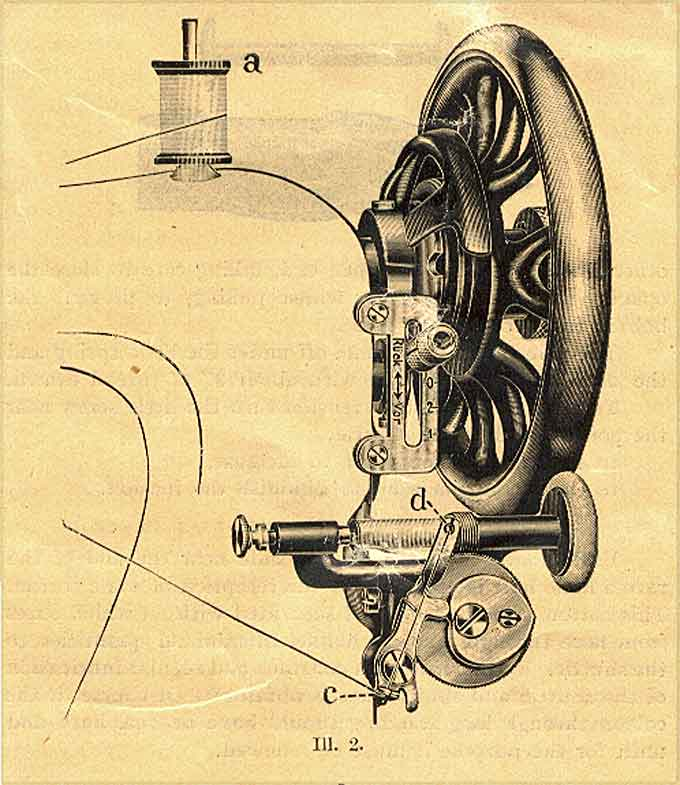

The NeedleBar
Bobbin Winder Types
Gritzner VS (post-1906 second type)

Courtesy of Claire Sherwell
To Wind a Bobbin
In case the machine is fitted with the special winder
(of which illustration hereafter) disconnect the upper mechanism and insert
the bobbin as afore described, then lead the thread from the reel (a) through
the tension discs fixed to the thread lever cover plate on the arm of the machine
to the left and then down through the guide (c) and up again through the hole
(d) of the thread guide. Fasten the thread by passing it through the hole in
the right hand side flange of the bobbin and squeeze the end between said flange
and the right hand spindle. When beginning to wind take care the upper notch
(d) of the thread guide is placed as far to the right as possible, as shown
in illustration, and then press the winder against the hand wheel.
When the bobbin is sufficiently filled throw the apparatus
out of gear by pressing it down with the hand.
© Alan Quinn 2002.
All Rights Reserved
This web site may not be
reproduced or distributed in part or in whole without the prior written
permission of the author